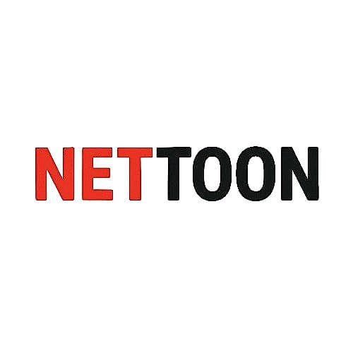

01

Infrastructure/Platform (Abiotic Environment)
The Technology This is the foundation, the technology, rules, and tools that enable for the entire ecosystem. It ensures a high-quality, seamless, and scalable experience. This involves the streaming capabilities, upload tools, search functions, recommendation algorithms, content management systems.
Discovery